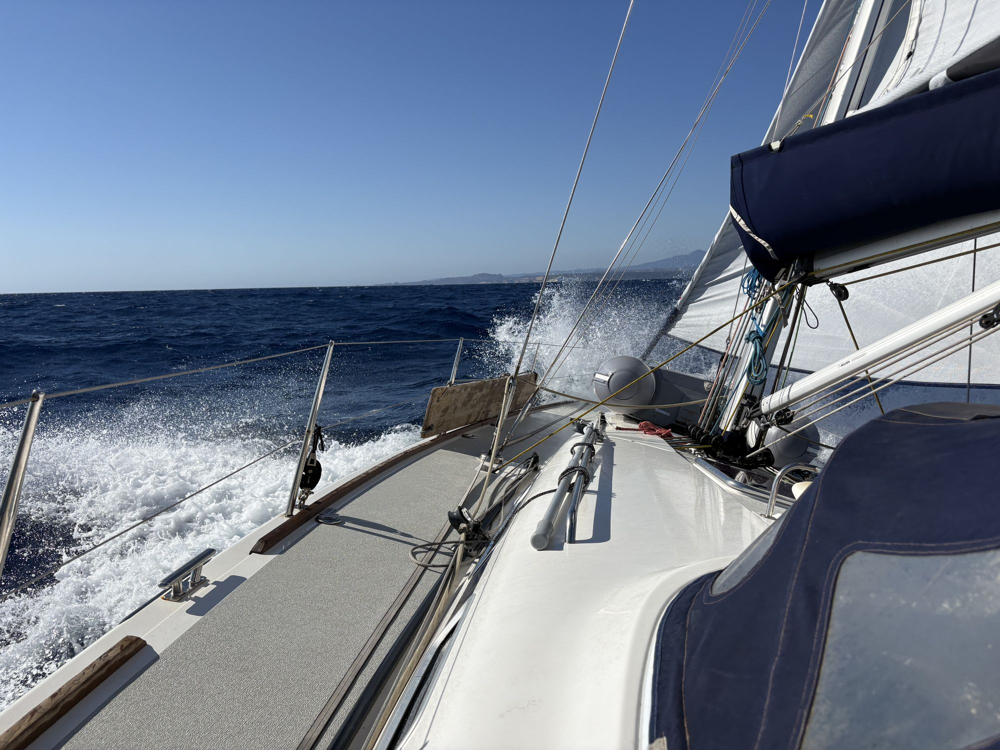
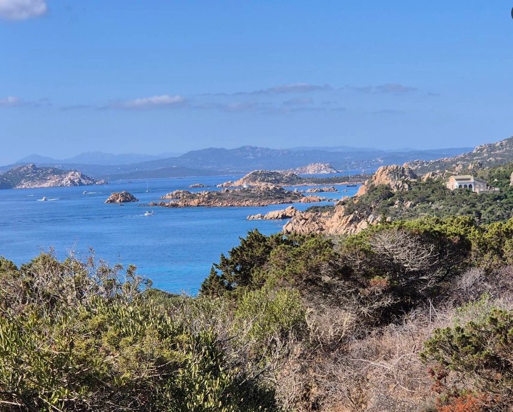
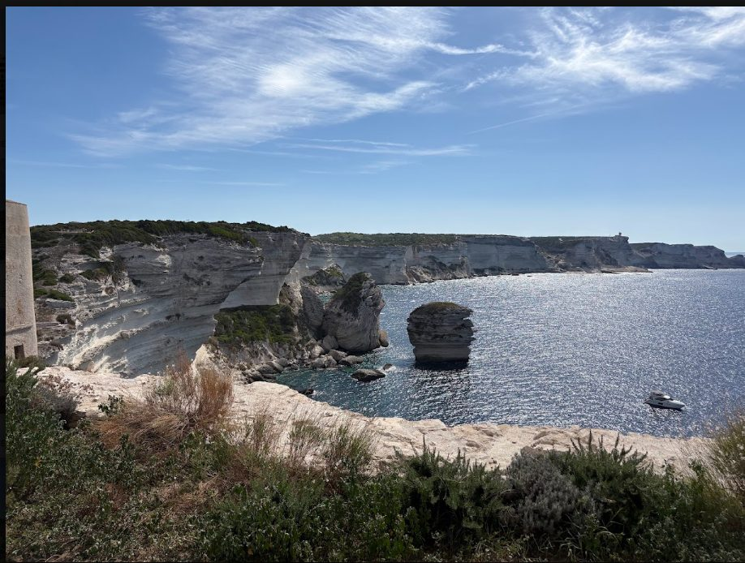
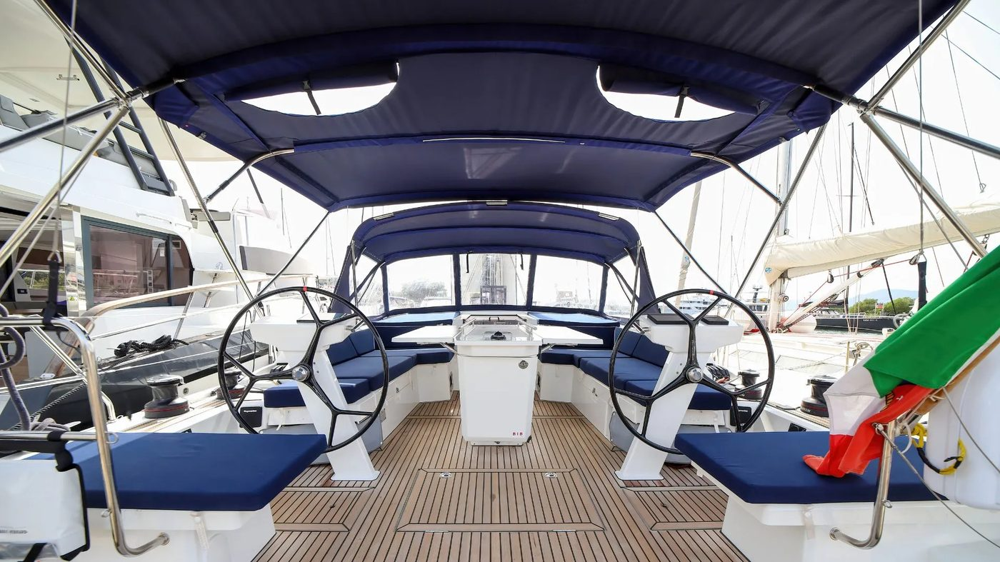

Meilentörn
Lange Schläge, Wachen, Navigation bei Tag und Nacht. Für alle, die Seemeilen und Erfahrung für den Hochseeausweis sammeln.
Für dich, wenn du Meilen brauchst.

Meilen sammeln, segeln lernen oder einfach Ferien unter Segeln machen: Törns im Mittelmeer mit kleiner Crew. Anfängerinnen und Anfänger sind willkommen.
Nicht jede Crew will dasselbe vom Meer. Bei jedem Törn steht deshalb dabei, worum es in der Woche geht.
Lange Schläge, Wachen, Navigation bei Tag und Nacht. Für alle, die Seemeilen und Erfahrung für den Hochseeausweis sammeln.
Für dich, wenn du Meilen brauchst.
Hafenmanöver, Ankern, Segeltrimm, Törnplanung. Du übernimmst Schritt für Schritt mehr Verantwortung an Bord.
Für dich, wenn du sicherer werden willst.
Von Bucht zu Bucht, baden, gut essen, abends im Hafen. Du packst so viel mit an, wie du Lust hast.
Für dich, wenn du das Meer geniessen willst.
Zwei Wochen nacheinander mit demselben Schiff, der Andromaca. Start und Ziel ist jeweils Olbia. Du kannst eine Woche buchen oder beide.

FeriensegelnCosta Smeralda, La-Maddalena-Archipel und bei passendem Wetter hinüber nach Bonifacio. Kurze Distanzen, viele Badebuchten.

FeriensegelnDasselbe Revier mit neuer Crew: Lavezzi-Inseln, Bonifacio, Santa Teresa di Gallura. Doppelkabine zur Einzelnutzung möglich.

Dein Skipper
Ich segle seit vielen Jahren, vor allem im Mittelmeer und auf dem Atlantik, und nehme am liebsten Crews mit, in denen Erfahrene und Neulinge zusammen an Bord sind. Ruhig, gut vorbereitet und ohne Drill: Jede und jeder darf ans Steuer, niemand muss.
Zu Hause bin ich in Hünenberg See am Zugersee. Wenn ich nicht auf dem Wasser bin, stehe ich in der Werkstatt und baue Möbel aus Massivholz.
Alle Meilenangaben sind gerundet. Vor 2016 kamen verschiedene Ferientörns dazu, zu denen ich heute keine verlässlichen Angaben mehr habe.
Steht deine Frage nicht hier, schreib mir einfach.
Nein. Beim Feriensegeln schauen wir uns am ersten Tag die Grundlagen an Bord an, danach kannst du überall mit anpacken. Bei Meilen- und Ausbildungstörns steht bei der Ausschreibung, was du mitbringen solltest.
Die Andromaca hat vier Doppelkabinen, jede mit eigener Nasszelle, dazu einen grossen Salon mit Sitzgruppe. In der zweiten Woche kannst du eine Doppelkabine auch allein nutzen.
Wir treffen uns am Samstagnachmittag zwischen 14 und 16 Uhr im Hafen von Olbia/Portisco. Der Törn endet am Samstag darauf gegen 9 Uhr mit dem Ausschiffen.
Auf der Törnseite findest du eine vollständige Packliste zum Abhaken, von den Dokumenten bis zur Segelkleidung.
Die Route ist ein Vorschlag. Wind und Wetter entscheiden mit, und die Überfahrt nach Korsika segeln wir nur, wenn es passt.
Schreib mir, welche Woche dich interessiert und mit wie vielen Personen du kommst. Ich melde mich mit den freien Kabinen.